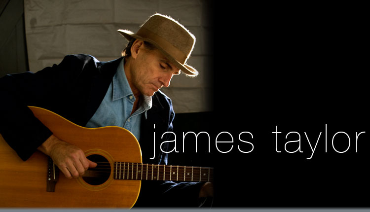

Martin Manley: My Life and Death
Born 8-15-53, Died 8-15-13 , Age 60
- Home Page
- January 1, 2012
- June 11, 2012
- Suicide Preface
- Why Suicide?
- Why not?
- Why Age 60?
- Self-Serving?
- Suicide - How 2
- Gun Control
- Other Suicides
- Other Quotes
- ------------------------------------
- Growing Up
- OMG: I look 60!
- Mom and Dad
- The Heavens
- My Religion
- Chancel Choir
- Victory O Lord
- The Proposal
- Two Marriages
- First Two Loves
- Pictures
- Trips and Travel
- Writing Fiction
- Music & Poetry
- Movies & TV
- Health
- Sleep Deprived
- Living Donor
- Food & Drink
- Creations
- Sports
- KC Star
- KC Tornado
- My IQ
- Synesthesia
- Poker
- Legal
- JOCO, Ks.
- U.S. Financial
- 911 & Conspiracies
- COOL STUFF
- Births & Deaths
James Taylor, Jason Mraz, Bruno Mars
I’ve always enjoyed singing. I suppose it's natural that anyone on the radio that sounds most like themselves will be someone they are drawn to. I mentioned in Trips and Travel that I was exposed to James Taylor for the first time on a trip to Colorado in 1970. My friend Charles and I played JT's second album (Mud Slide Slim) via 8-track dozens of times on that trip. In fact, that’s all we listened to. Even to this day, whenever I hear any of those songs on that album, I visualize the mountains.
Being an obsessive person, James Taylor is about the only artist I listened to with any regularity at all. It wasn’t that I didn’t like other songs and other artists, but they weren’t… James Taylor. He is the only artist of which I purchased every album. On average, he would come out with a new album every 2-3 years. Eventually, that was more like every four years.

I had a cassette player in my car for most of the time from the mid-70’s to the late 90’s. I swear I’m telling the truth here. I would put in one of his albums and play it over and over and over – dozens and dozens of times for months on end before I would switch to another JT album and I’d do the same with it. I did this for 20+ years!
Being as in love with his voice and his music as I was, one would think the best day of my life would have been when I went to see him at Starlight Theater in Kansas City. I and my wife Chris went with Charles and his wife. As it turns out, I hated it more than just about anything I can ever remember doing - at least anything that was supposed to be entertainment. The reason why was because he dared to sing some of his songs differently than they were recorded. It may seem absurd that I would be bothered by that, but to me, the original recordings were like the bible – you just don’t rewrite it!
In retrospect, it was unfair to place upon him a restriction such that he couldn’t improvise. I’m sure he enjoyed modifying his music and I’m sure others didn’t mind. But I also would be surprised if five people there – including James Taylor – had heard his recordings of those songs as many times as I had. So, for me, they were burned (nay, branded) into my brain. And, there was only one legitimate way to sing them as far as I was concerned. That’s the only time I went to see him in concert. I had other opportunities, but had no problem turning them down.
By the time CDs came out, I quickly built a collection that went far beyond James Taylor. I would buy best of… Celine Dion or Kenny Rogers or Lionel Richie or the Bee Gees. I probably had 30 "best of" artists, but no individual albums except JT. Even though I had those other CDs, I still listened almost exclusively to James Taylor.
Then, after my divorce in 1997, I began dating. I met Teri in 1998 via Matchmaker. She lived in Overland Park. It didn’t take too many visits before I knew I had to get out of Topeka and move to Johnson County, Kansas.
Though she denies it, the first time she got in my car, within five seconds, she ejected my James Taylor cassette and stuck in a cassette of some other music – alternative. She was fully aware of my JT obsession by our previous correspondence and her musical tastes were infinitely broader than mine. She felt it her duty - almost a sacred mission - to wean me off of James Taylor. So, she made three cassettes with about 12 songs on each that were popular in the 1997-1998 time frame.
I forced myself to listen to them over and over and over – in place of James Taylor. About half of them I liked and half I didn’t. But, what she did for me was to talk me down from the ledge so to speak, to get off the JT juice, to break the habit – and I did it by going cold turkey.
Shortly after we were married in 1999, I started listening to a broader mix of music, but my personality and my previous habits were still geared toward listening to one thing at a time for long periods. In 2002, Teri asked me to watch a video of Jason Mraz. That started a love affair with him. I think it’s fair to say that he was her favorite male artist as well as mine for a decade.
COOL FACTOID: Mraz’ song “I’m Yours” was on the Billboard Hot 100 for 76 weeks and that is an all-time record – more than any other artist… ever!
Although there were other new artists that I listened to from 2002-2009, Mraz dominated my musical interests. Teri and I were divorced in 2004, but we have maintained a good friendship and we would often do things together up until my death. Being a musical aficionado, she would constantly ask me who was singing whatever song happened to be on the radio. She had quizzed me on songs as long as I had known her. I pretty much reduced my guesses to Elvis or Led Zepplin. I knew nothing. I couldn’t begin to guess an artist unless it was Elton John or John Denver or the Beatles or a few of the “best of” artists I had CDs for. But, modern stuff… forget it. She tried teaching me the names of these people, but without some kind of visual context, it was impossible. Besides, my brain was already deteriorating.
So, around 2010, I started watching VH1. I would tape hours of it and then fast forward through the videos. I was trying to put the names of artists I had heard with their music and their faces. I also watched VH1 top-20 countdown religiously. Eventually, it got to the point where I started to know who most recent artists were. I can still only correctly answer 10% of the time she asks about someone before 2000, and probably only 20% from 2000-2010, but it’s a ton better than it was. Since 2010, I can probably get it right 50% of the time.
In looking back on it and realizing how much good music there has been just in the past three years, – many of those songs ended up on my IPod. It makes me lament, to some degree, that I didn’t have an open mind all the years I listened exclusively to James Taylor or even Jason Mraz.
James Taylor was never surpassed as my all-time favorite singer, but I haven’t listened to one of his CDs in at least 10 years. Jason Mraz is possibly my favorite singer today, but he was close to being surpassed by Bruno Mars as of August 15th. All three of these guys are geniuses in my opinion.
COOL FACTOID: Bruno Mars’ first song “Nothin’ on You” was officially a song by B.o.B (rapper) and Mars did the vocals. That was in 2010 and the song made the charts. His next song was “Billionaire” by Travie McCoy (rapper). Again, Mars did the vocals. He also co-wrote both songs. Billionaire reached #1 on VH1’s top-20 countdown. He then wrote Forget You (sung by Cee Lo Green) which made it to #1. Now that he made a name for himself, he went solo. His next song “Just The Way You Are” reached #1. After that, “Grenade” reached #1. Then “The Lazy Song” made it to #1. Then came “It Will Rain” (#1), “Locked Out of Heaven” (#1) and “When I Was Your Man” (#1). As I type this, "Treasure" has reached #4. I won't be around to see if it makes #1 like all his others.
He’s on an unbelievable streak – almost unparalleled. And, what makes him so special is the incredible diversity among the songs he writes and sings. It’s impossible right now to pigeonhole him and say he’s “this” kind of singer or “that” kind of singer. Remember, you heard it here first. Someday, Bruno Mars may sell more albums than any other artist in history – including Michael Jackson and the Beatles.
As to women, I’ve come to enjoy P!nk tremendously. Almost everything she does, I like. But, I like male voices most of all because from the first time I heard James Taylor, I’ve always sung along.
I will make a woman prediction. Sasha Allen was on this past season of The Voice. She has one of the most incredible voices I've ever heard. But that's not all, she's gorgeous, has great stage presence and is sure to be a star. I see her as a cross between Beyonce and Witney Houston.
Copyright 2013 Martin Manley Life and Death. All rights reserved.